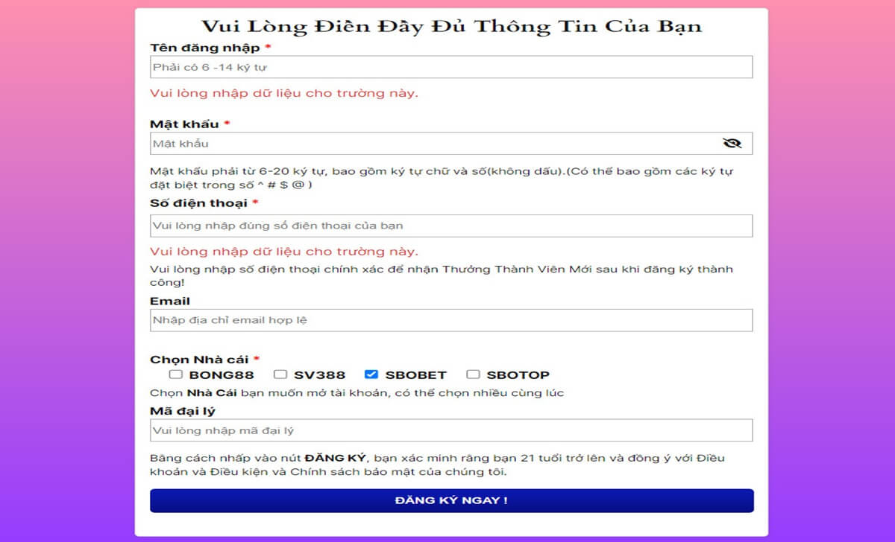

Home – Casino trực tuyến Sbotop – Blackjack là gì? Hướng dẫn chơi Blackjack tại Sbotop
BLACKJACK LÀ GÌ? HƯỚNG DẪN CHƠI BLACKJACK TẠI SBOTOP
Blackjack là một trò chơi bài rất phổ biến trên thế giới, đặc biệt là ở các sòng bạc. Trò chơi này có nguồn gốc từ Pháp vào thế kỷ 18 và được gọi là Vingt-et-un (nghĩa là 21). Ở bài viết này, chúng ta sẽ cùng tìm hiểu Blackjack là gì? Hướng dẫn chơi Blackjack tại Sbotop hiệu quả nhất nhé!
Tìm hiểu Blackjack là gì?
Tìm hiểu Blackjack là gì?
Theo một số nguồn thông tin cho biết, Blackjack là một trò chơi bài đơn giản nhưng cũng đầy tính chiến thuật và may rủi. Người chơi cần phải biết cách tính toán xác suất, quyết định khi nào nên rút thêm bài, khi nào nên dừng lại, khi nào nên đặt cược thêm hoặc bỏ bài.
Một số luật chơi cơ bản của Blackjack mà anh em cần tham khảo qua là:
Hướng dẫn chơi Blackjack tại Sbotop hiệu quả
Hướng dẫn chơi Blackjack tại Sbotop hiệu quả
Để chơi Blackjack tại Sbotop, quý anh em cần thực hiện các bước sau:
Đăng ký, đăng nhập hệ thống
Người chơi cần có một tài khoản cá cược tại Sbotop để chơi Blackjack. Nếu bạn chưa có, bạn có thể đăng ký SBOTOP một cách nhanh chóng và dễ dàng trên trang web của Sbotop.
Bạn chỉ cần điền vào một số thông tin cơ bản, như tên, số điện thoại, email, mật khẩu, và mã đại lý. Sau đó, bạn sẽ nhận được một email xác nhận từ Sbotop và hoàn tất việc đăng ký.

Đăng ký tài khoản Sbotop chơi cá cược
Hoàn tất thông tin đăng ký sbotop
Nếu bạn đã có tài khoản, bạn chỉ cần đăng nhập SBOTOP bằng cách nhập tên đăng nhập và mật khẩu của mình.
Nạp tiền vào tài khoản cá cược
Để chơi Blackjack, bạn cần có tiền trong tài khoản cá cược của bạn. Bạn có thể nạp tiền SBOTOP bằng nhiều phương thức khác nhau.
Ngoài ra, anh em cũng cần lưu ý rằng mỗi phương thức nạp tiền bằng cách nào cũng có thể có một số giới hạn về số tiền tối thiểu và tối đa, thời gian xử lý, và phí giao dịch. Bạn nên kiểm tra kỹ các thông tin này trước khi nạp tiền để tránh những phiền phức không đáng có.

Nạp tiền vào hệ thống cá cược
Tiến hành chơi và rút tiền thắng cược
Tại Sbotop, bạn cần vào mục Casino trên trang web hoặc ứng dụng Sbotop. Bạn sẽ thấy nhiều loại hình casino khác nhau, như Live Casino, RNG Casino, hoặc Virtual Casino. Bạn có thể chọn loại hình casino mà bạn thích và tìm kiếm trò chơi Blackjack trong danh sách các trò chơi
Vào cổng game Blackjack
Sau khi chọn trò chơi Blackjack mà bạn muốn chơi, bạn sẽ được chuyển đến một màn hình chơi mới. Bạn sẽ thấy bàn chơi Blackjack với nhà cái và các người chơi khác (nếu có). Bạn cần đặt cược trước khi trò chơi bắt đầu bằng cách chọn số tiền cược và đặt vào vị trí cược trên bàn. Bạn có thể đặt cược cho một hoặc nhiều vị trí cược tùy theo số lượng bài chơi của mình.